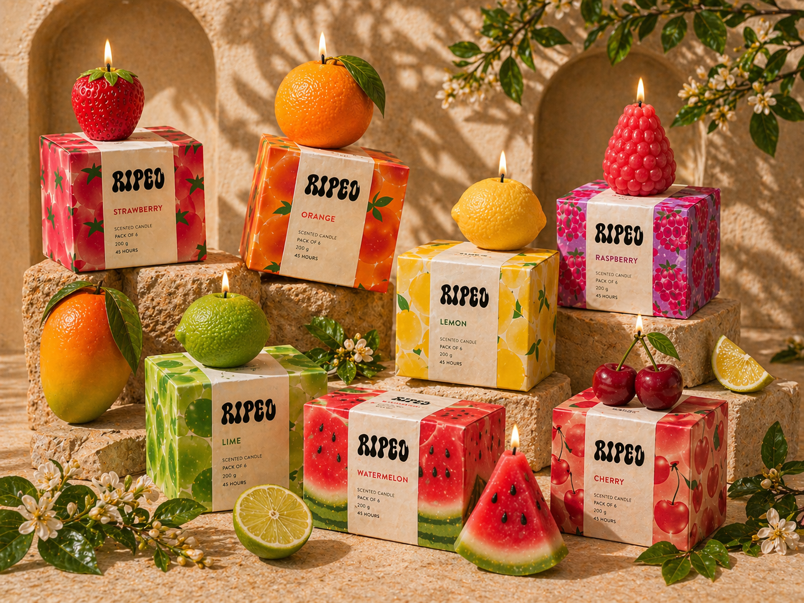
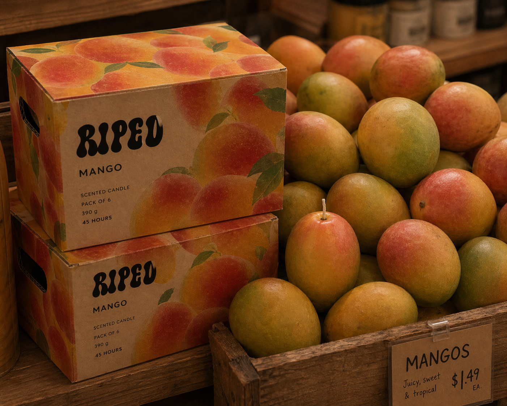
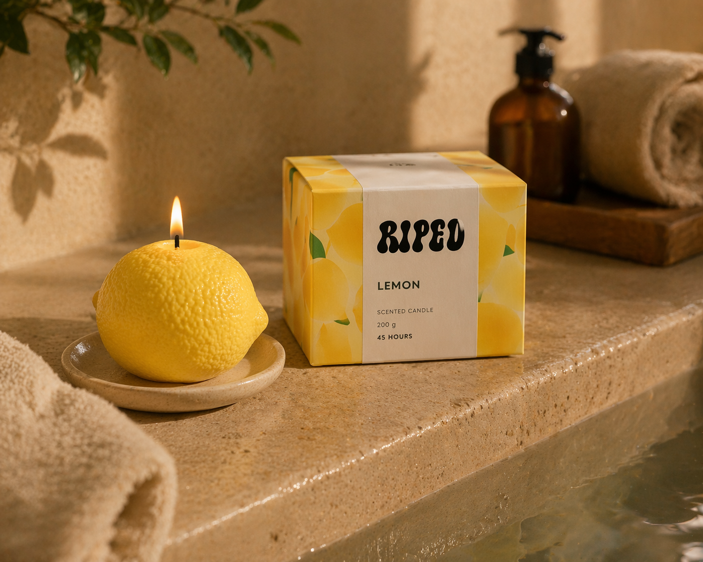
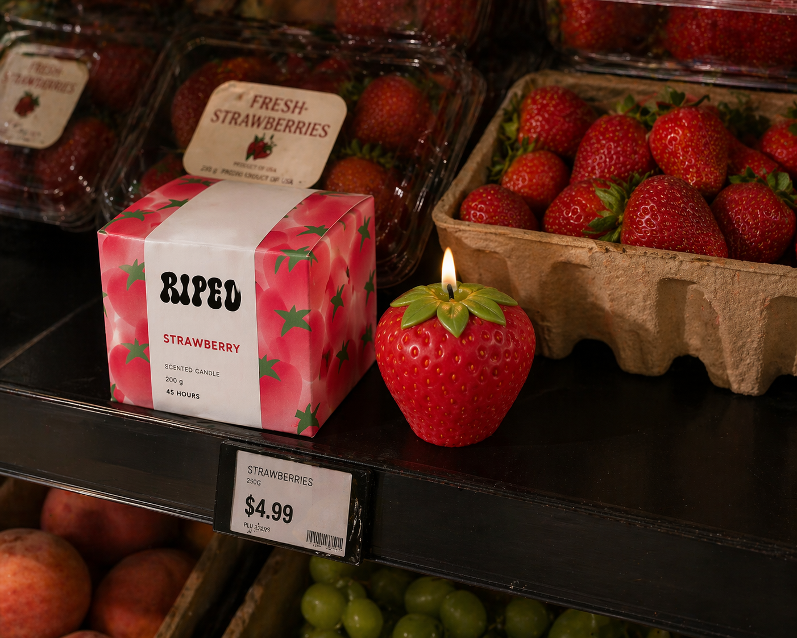
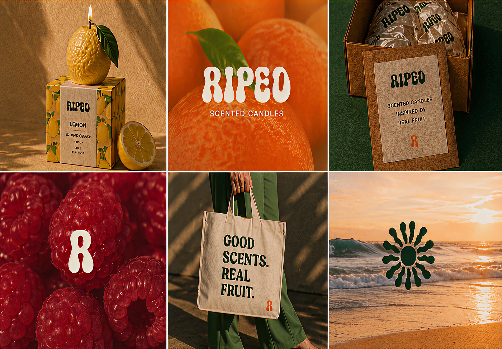
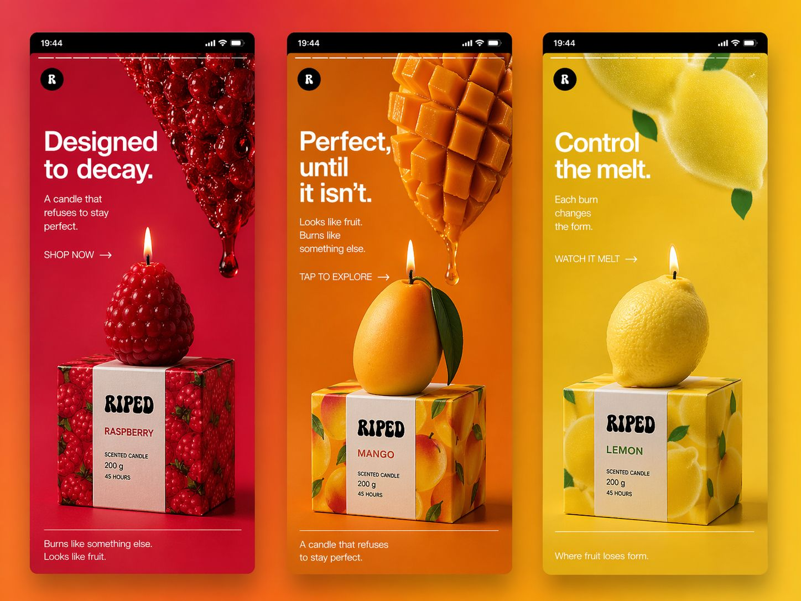
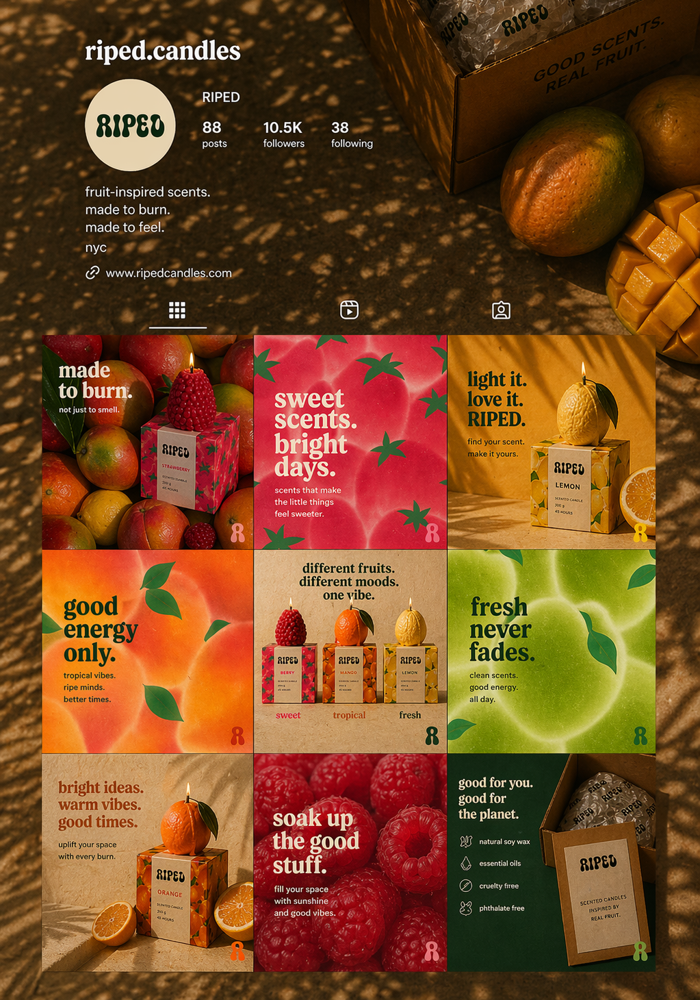

RIPED
A branding campaign for a fruit-inspired candle line, built around warmth and the feeling of scent becoming atmosphere.
Why
I wanted a candle that makes you hungry before you light it.
What I did
Each scent became a fruit, a colour and a mood, then one system that runs across packaging and social.
What it taught me
A brand that feels ripe, warm and a little imperfect is easier to love than a polished one.
Self Initiated · Spring 2026
[Figma, Adobe Photoshop, Adobe Illustrator, After Effects]







